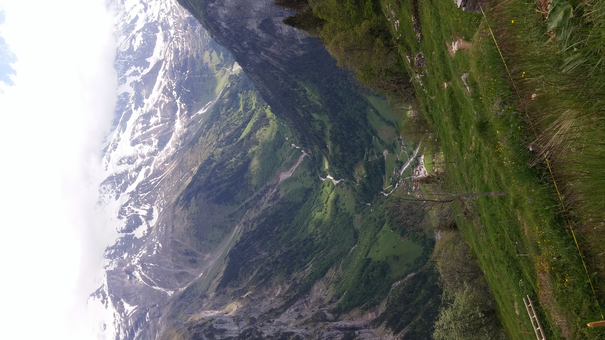

Switzerland
Welcome to Wengen
Enjoy the outdoor in every season
Learn more
Why everybody loves Wengen?
Wengen is a small village on the Swiss Alps. Famous for its timber chalets and belle époque hotels, it offers entertainment for the whole family and for every season.Winter
People come to Wengen to enjoy winter sports like ski, ice-skating and toboggan, looking forward to indulging in some warming Glühwein or Fondue during the après-ski.
Summer
Best activity in summer is surely hiking the many trails around the village, with breath-taking views of the surrounding mountains. One can also ride up above 3000m to Jungfraujoch, with the highest railway in Europe, to cool down amongst the perennial snow of the Jungfrau mountain summit.
